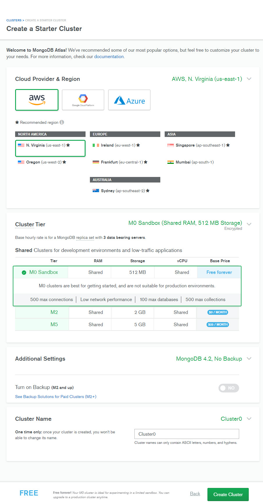
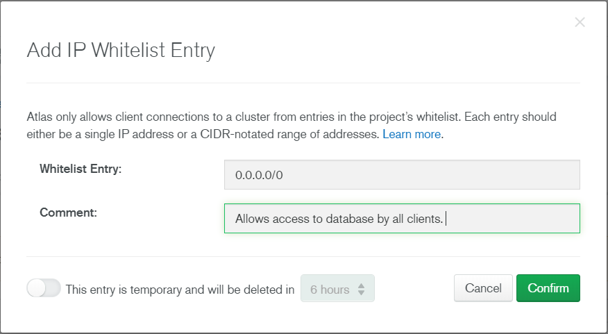
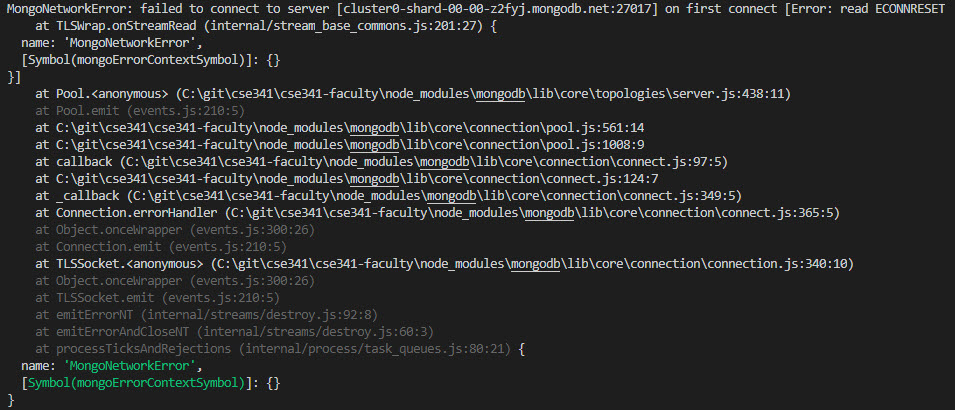
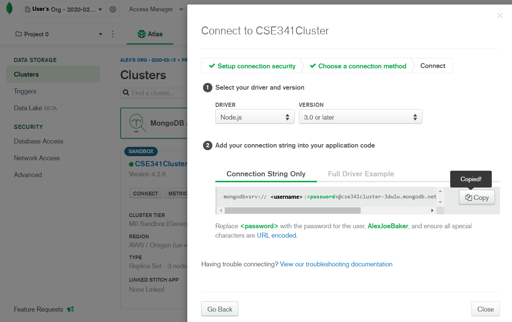
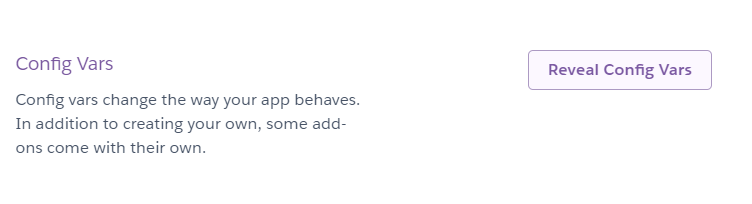
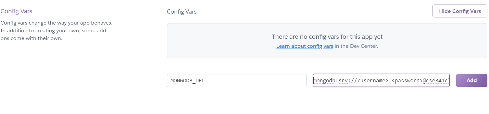

Overview
Your team activity this lesson is extremely simple. Once you all have completed the reading, assist one another in making some modifications to your apps for MongoDB compatability with Heroku. For this activity, you will use your e-commerce application project repository.
Deploy to Heroku
First things first, you need to deploy your application (the one for your team activities) to Heroku. Follow the instructions in their documentation:
Note, if you follow the above documentation, you'll be able to create a new Heroku application. You already have an application, so you may need to shift files around or modify your git remotes.
Getting Heroku set up with a project can be difficult at first. If you are having issues, this video may help.
Using MongoDB on Heroku
In order to manage the use of external services and ports, Heroku's architecture requires the use of
config vars.
For example, for your app to run on both Heroku and localhost, Express calls .listen(PORT), which makes use of
of the Heroku config var, .
PORT is initialized with:
const PORT = process.env.PORT || 5000
Using the ||, PORT's value is initialized to the first defined variable.
So, when the application is run on Heroku, process.env.PORT
is defined and passed to .listen(). Running locally, the config var is undefined, so the localhost port 5000 is passed to .listen() instead.
A similar process must be used for the MongoDB implementation you created using the online video course.
Instructions
Create MongoDB Account and Cluster
-
Navigate to the MongoDB Atlas Site
-
Click: Start Free
-
Fill out your email, name and password to create an account.
-
Choose the free option and click: Create a Cluster
-
Ensure that the configurations for the new cluster look similar to the following image and have the free options selected.

-
Your account is now ready to be configured with your project.
Connect to Application
-
First, you will need to install the cors node package using npm in your terminal:
npm install corsWe'll use this package later.
-
Next, open and login to MongoDB Atlas dashboard on your browser, and click "Network Access" under the Security tab.
Click the "+ ADD IP ADDRESS" button, and add the following IP address to the whitelist:
This will allow all those who access your Heroku site to use the database. It's not very secure right now, but that's ok.
You are welcome to select the "Add Current IP Address" option, or look up the IP of your computer and add that. If you see the following error (after running npm start), it is because of the IP address not matching the one in use. This will be fixed by using 0.0.0.0/0
 -
Click: Security > Database Access, and create a new user with read/write access in any database.
-
Within your MongoDB Atlas dashboard, click on the clusters tab below "Data Storage"
Click on "connect" within the cluster you created for your shop
In the popup, click on "Connect your application"
Click the "Copy" button the "Connection String Only" tab beneath step 2:
 -
Navigate to your app's settings in the Heroku dashboard
Click the app that you've published your store app to, and click on "settings"
Beneath settings, find the "Config Vars" section and click "Reveal Config Vars"
Now, enter a keyname of
MONGODB_URLand use the connection string you copied from your MongoDB Atlas cluster for the value.Obviously, <username> and <password> should contain your MongoDB username and password.
Click add when the correct values are placed.
-
Finally, within your app.js or index.js file (or wherever else you decided to place your Mongoose setup), add the following lines of code:
const cors = require('cors') // Place this with other requires (like 'path' and 'express') ... const corsOptions = { origin: "https://<your_app_name>.herokuapp.com/", optionsSuccessStatus: 200 }; app.use(cors(corsOptions)); const options = { family: 4 }; const MONGODB_URL = process.env.MONGODB_URL || "mongodb+srv://<username>:<username>@cse341cluster-3dwlw.mongodb.net/test?retryWrites=true&w=majority";Finally, modify your mongoose.connect() function to match this:
mongoose .connect( MONGODB_URL, options ) .then(result => { ... // This should be your user handling code implement following the course videos app.listen(PORT); }) .catch(err => { console.log(err); }); -
Finally, push your application to Heroku master and check if your app works on Heroku.
Conclusion
If you ever have any questions or issues, make sure to look at your Heroku logs with heroku logs --tail and search online for solutions before seeking help in the class. If you find helpful resources or tutorials as you configure your project this lesson, please post them in the help channel to help your peers.